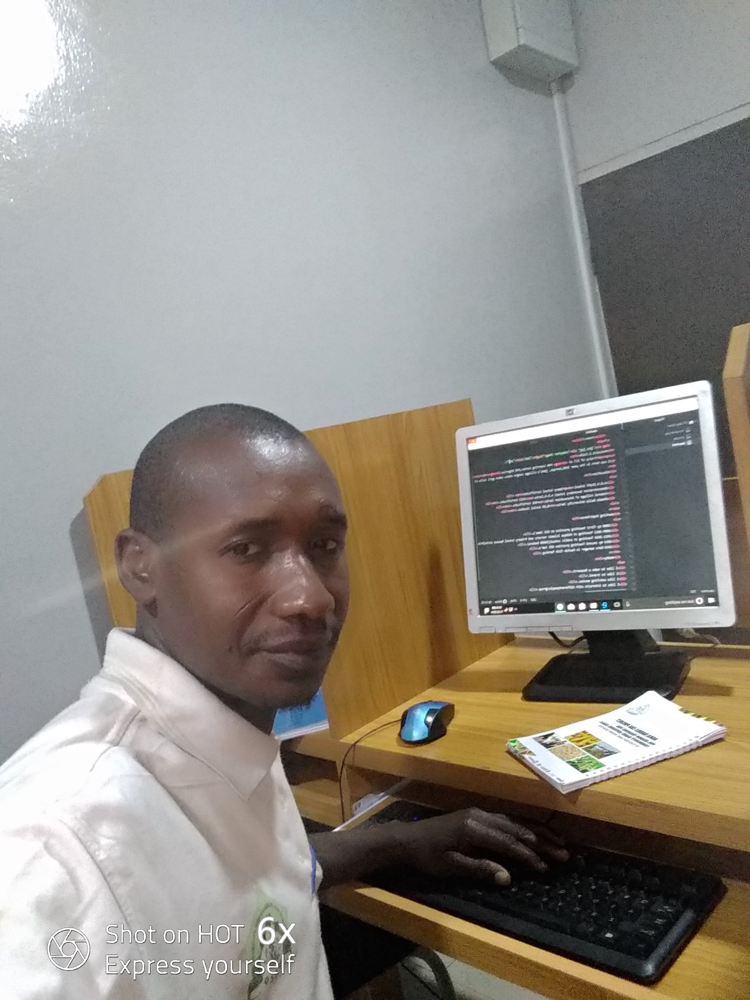

|  | Hussaini.S.SaiduTrainy of ICT at PAN Learning Center,PAN Nigeria |
I was born in the year 1986,at koraye, jama'a village zangon shanu sabon gari zaria of kaduna state.
I did my primary school at A.B.U.Staff School,
I also did my secondery school at Demonstration Secondery School A.B.U zaria.
I furtherd my N.C.E.at F.C.E Zaria.
I proceded my B,ED Social Studies Education at A.B.U Zaria.I got married when i am in final year of my NCE programme at the year {2009} with my couplle whose name is MARYAM SALIHU ZEZE.And we are blessed with five children.The first child is a male